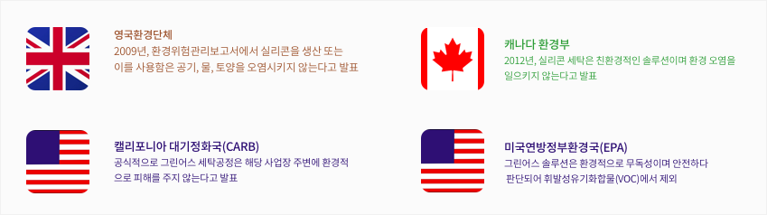

About
GreenEarth
글로벌 친환경 세탁 브랜드
그린어스는 1817년 시작한 영국세탁소(존슨스 더 클리너즈; Johnsons The Cleaners)에서 시작, 환경파괴,
암유발의 원인이 되는 석유계 기반의 드라이클리닝 세탁을 개선하고자 세계적인 기업 P&G(Procter and Gamble), GE(General Electric)와 함께 실리콘 세탁법을 개발. 특허를 취득하였습니다. 현재는 미국, 캐나다 및 40여개국 7000여개의 매장 및 유명 제휴사를 보유한 세계적인 친환경 세탁 브랜드입니다.
친환경 실리콘 세탁과 그린어스코리아
그린어스코리아는 강남 중심의 맵시크린과 타워크린월드를 합병하여 기본적 명품관리능력을 갖추었고 국제특허 등록된 실리콘세탁 국내 총판권을 그린어스 미국본사로부터 인계 받아 2016년부터 그린어스만의 친환경
프리미엄 실리콘 세탁 기술 서비스를 국내에 제공하고 있습니다.
그린어스코리아는 서울, 부산 등 주요 도시 중심의 22개 직영점, 업계 전문 인력 총 100여명의 런드리 컨설턴트(Laundry Consultant, LC), 런드리 프로페셔널(Laundry Professionals, LP)와 함께 그린어스코리아 고객님께 일반 드라이클리닝과 친환경 프리미엄 실리콘 클리닝 서비스를 제공합니다.
그린어스코리아는 본사 아래 자체 세탁 연구소를 운영하고 있으며 브랜드 자체적으로 복원가공, 특수세탁과
같은 고난도의 세탁 및 섬유 연구, 테스트를 진행하고 있습니다. 또한 타 국가 제휴사들과의 세탁기술교류로 특수세탁 분야의 사고위험성을 최소화 하고 있습니다.
다양한 B2B 사업
그린어스코리아는 세탁 전문성과 편리성 그리고 스마트한 세탁 산업의 발전을 위해 웨딩 및 기타 드레스 케어,
린넨 세탁, 무인 세탁박스, 케어라벨 사업 등의 B2B사업을 진행하고 있습니다.

GreenEarth
Technology
더욱 탁월한 세탁, 그린어스 실리콘 솔루션
그린어스의 실리콘 세탁 공정에서는 실리콘 마이크로 입자가 의류 옷감 사이로 침투, 최소한의 소재 손상으로
의류를 세탁과 동시에 섬유 코팅 효과로 인해 섬유 보존력을 높여줍니다.
그린어스 실리콘 솔루션은 자연 성분인 모래(SiO2) / 물 / CO2로 구성됩니다. 세탁에 사용된 실리콘 용제는
일정 시간 후, 다시 모래(SiO2) / 물 / CO2로 분해되어 환경을 오염시키지 않습니다.
그린어스 실리콘 솔루션은 모래(SiO2) / 물 / CO2로 분해되기 때문에 세탁 후, 세제 잔존량이 극히 적어 인체에 끼치는 영향이 적습니다. 따라서 아토피나 민감 피부 소지자 분도 안심하고 사용하실 수 있습니다.
그린어스는 일본 직수입 EM미생물 세재를 사용하여 세탁 잔존물에 대해서도 대비해 두고 있으며 섬유세척력,
피부, 환경에 대하여 한번 더 고려하였습니다.
세계 환경기관에서 인증 받은 친환경 세탁

이 외에도 RCRA(유해폐기물관련), CERCLA(미국 포괄적 환경대응 책임보상법) 및 SARA 법, 캘리포니아 65조항(유해화학물질 유출 및 배출 금지관련)에서 그린어스를 제재 대상에서 제외하였습니다.

GreenEarth
Lab
그린어스코리아는 기술력을 키우고 고객에게 신뢰를 얻는 브랜드로 나아고자 자체 세탁 연구소, GreenEarth Lab을 운영합니다.
그린어스코리아는 그린어스 자체 연구소의 탁월한 세척력과 섬유보존력 연구를 통해 글로벌 유명 의류 브랜드의 섬유 세탁 테스트 의뢰부터 각 유명 의류 브랜드 케어를 위한 그린어스 케어라벨 사업을 진행하고 있습니다.
그린어스코리아의 궁극적인 최종 목표는 의류 토탈 클리닝 서비스 제공이며 이를 위해 각종 세탁 사업 및 서비스를 진행하고 있습니다.


GreenEarth
Place
만나보실수 있습니다.